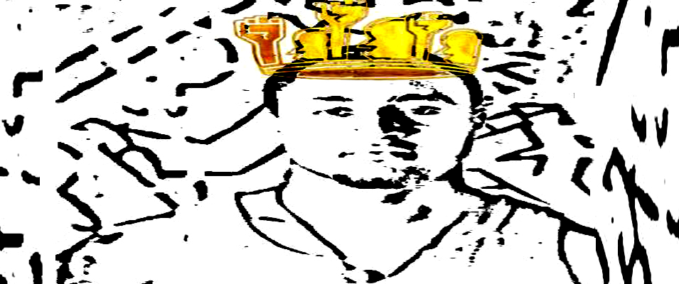
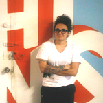
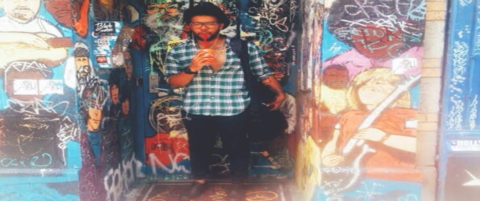
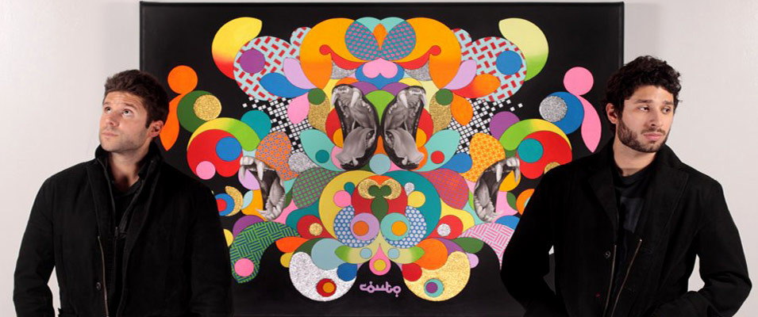
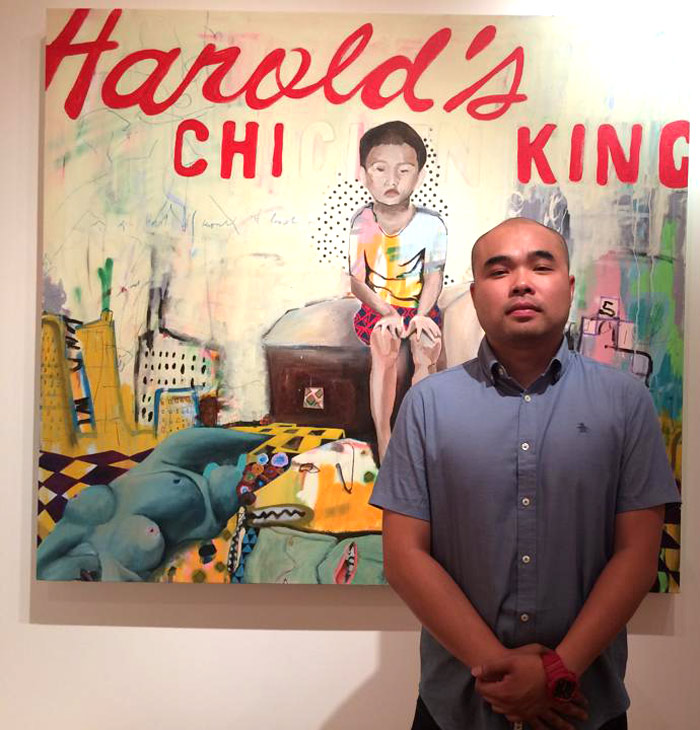
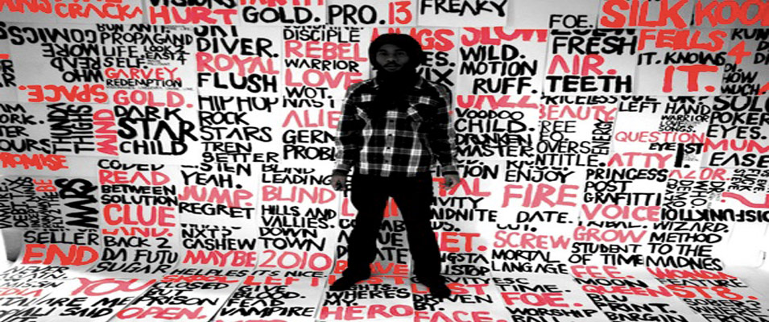
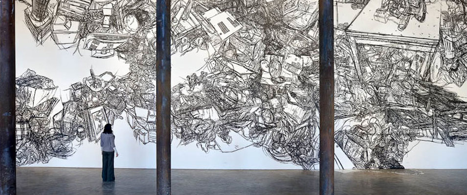

Carlos Rolón, also known as Dzine, is a connoisseur of the customization of street culture. His grand displays and site specific sculptural installations and conceptual art pieces have traversed the globe, from lowrider bicycles adorned with gold and garb, to painted Rolls Royces decked out with subwoofers, elaborate nail art, vibrant mandalas and homages to his childhood growing up...[read more]
IN THIS ISSUE:
Sebastian Hidalgo
Sebastian Hidalgo steals and captures moments like a thief behind the lens under the guise of Stolen Photography. Although Hidalgo primarily focuses on documentary photography and portraiture, he does not consider himself a storyteller, but seeks to create an iconic image as a representation of the times...[read more] Barrett Keithley
As a young boy interested in art, poetry and vibrant colors, Barrett Keithley struggled not only with his identity, but also with his role as an artist as a young boy growing up in the Wild Hundreds, an area on the south side of Chicago known for its violent reputation. He fueled this privately into his writing and painting growing up...[read more]The 50 Shots Project by Imani Amos
Imani Amos doesn’t call herself a photographer by trade, but she has quite possibly made one of the most powerful and relevant photography projects of our current time with her “50 Shots Project: Humanizing America’s Most Hunted” originating out of Chicago. The project features 50 black men posed in mug shots who are all positive...[read more] Sam Kirk
For Sam Kirk, the word artist encompasses many things. With a background in design, and a decade of advertising experience, art wasn’t too far off of the spectrum. She wears quite a few different hats, including painter, muralist, designer, interior designer, provocateur, and conversationalist to name a few. Her work, thematically, deals largely...[read more] For photographer Vonnie Quest, taking pictures was just a gateway from his first love, film. He began shooting four years ago as a practice to help him strengthen his film skills for angling shots and capturing a slice of a moment. Quest grew up as a horror movie fiend, originally wanting to make his own slasher flicks, he took to the streets...[read more]
 The Couto Brothers came out of the womb with paintbrushes in hand and thus began leaving their paint strokes on the canvas of life. A figurative statement, but a true reality, these two brothers have been making art together for as a long as they can remember. Their pieces are usually large scale kaleidoscopes...[read more]
 Inspired by the intersection of his Laotion upbringing and history, and urban American culture, particularly hip-hop, Chantala Kommanivanh’s pieces are the product of a melding of cultures and an exploration of cultural hybridity. As Chicago native, his most recent work, ‘Like a Zenith” is paints a vibrant portrait of the struggle growing up...[read more]
 Eyes may be the window to the soul, but windows are the eyes to the art of 27 year old British and Jamaican artist Barka out of South London. Utilizing repurposed materials, most notably windows, Barka creates colorful portraits of people that are a slice of life - a woman taking a smoke break, a dapper fellow sitting in contemplation and an African...[read more]
What does it mean to be a man in a growingly feminist world? What place and what roles do men have in this changing scope? What is masculinity and how is it portrayed through the lense of femininity? These are the types of questions that photographer Devon Endsley is seeking to explore in her series “Sizing Up Masculinity”...[read more]
 There is something awe struck about the work of Korean artist, Heeseop Yoon, and it isn’t just the fact that she uses black masking tape as her medium to make lines in her artwork. Her work fills the vast spaces of gallery walls across the globe with such intricacy unlike anything many people have seen before. Spilling over onto the ceiling...[read more]